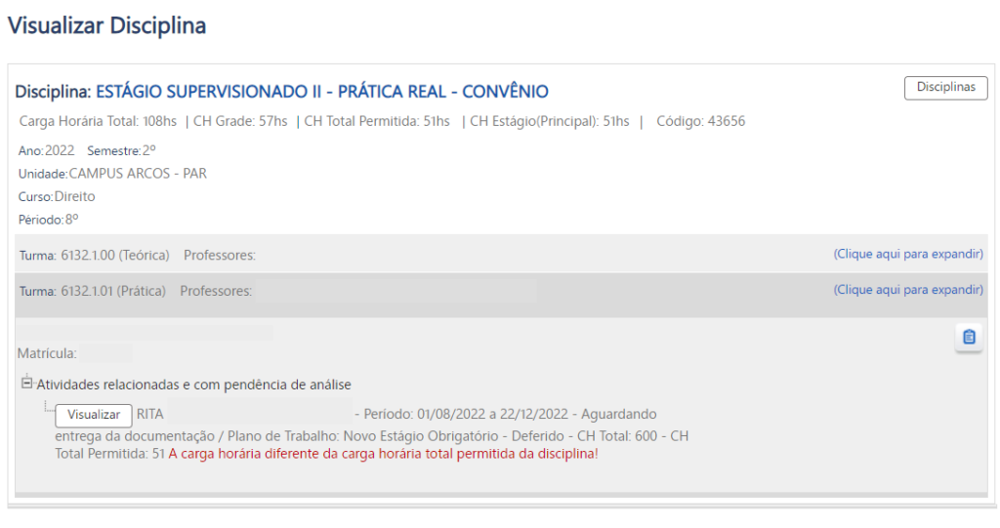
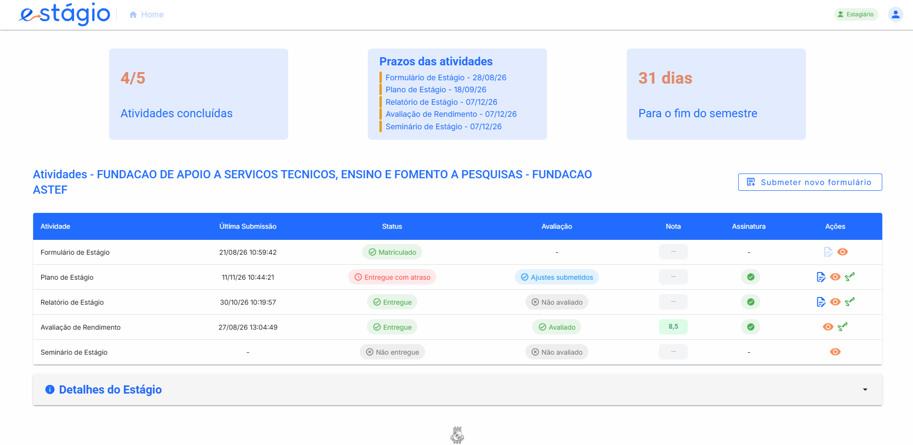
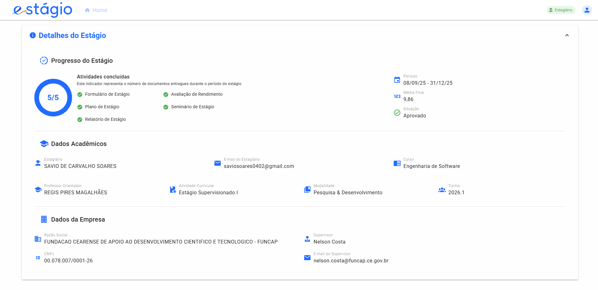
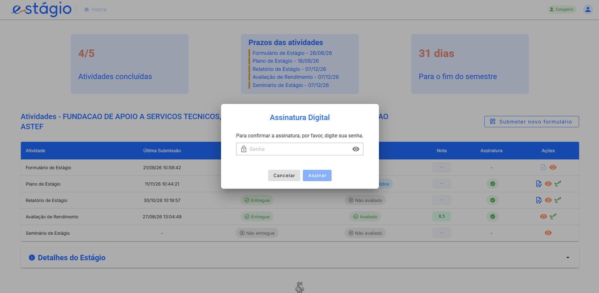

Centralizando a tramitação documental, o acompanhamento de prazos e a validação de estágios para fortalecer o elo entre estudantes, universidade e empresas concedentes no mercado.
O estágio supervisionado conecta a formação acadêmica às empresas e órgãos públicos concedentes. A plataforma integra diretamente os supervisores externos das empresas no fluxo digital de acompanhamento e Avaliação de Rendimento, desburocratizando a parceria universidade–empresa e acelerando a inserção profissional discente.
Desenvolvido como ação extensionista no Núcleo de Práticas em Informática (NPI) da UFC Quixadá, o projeto alia a formação prática dos alunos de Computação e Design à entrega de um serviço público gratuito para os 4 cursos do campus (CC, ES, SI e DD) e dezenas de organizações parceiras.
• Fragmentação de Canais: Documentos espalhados entre Google Classroom, e-mails,
SIGAA e links externos.
• Quebra de Assinaturas em PDF: Quando múltiplos atores (supervisor da empresa, aluno, orientador e coordenador) assinavam
o mesmo PDF, as assinaturas anteriores eram frequentemente
invalidadas.
• Dificuldade nos Prazos: Relatos nos questionários
de desistência de matrícula e perda de prazos por falta de orientação centralizada.
• Ambiente Único Integrado: Centraliza Plano de Estágio, Relatório Final,
Aproveitamento e Avaliação de Rendimento.
• Assinatura Sequencial Íntegra: Protocolo com hash criptográfico e QR Code que
preserva a validade jurídica e permite assinatura em lote pelos
docentes.
• Dashboard de Pendências: Atende diretamente à
demanda das entrevistas docentes por revisão online sem necessidade de baixar dezenas de
arquivos avulsos.
Questionário aplicado aos alunos de ES, CC, SI e DD mapeando dificuldades na matrícula, modelos de documentos e assinaturas digitais.
Benchmarking funcional com E-clic, Sage (UFT), Portal Abre e APC/GAD (PUC Minas) combinado a entrevistas com coordenadores de estágio.

Estagiário, Supervisor da Empresa Concedente, Professor Orientador, Coordenador de Curso e Secretaria Acadêmica.
A secretaria define os prazos oficiais da turma para cada etapa (Plano, Relatório e Avaliação). O sistema alerta sobre atrasos e registra automaticamente penalidades por entrega fora do prazo.
Garante a precedência exigida pelo regulamento na Avaliação de Rendimento: 1º Supervisor da Empresa → 2º Estagiário → 3º Orientador → 4º Coordenador, bloqueando etapas fora de ordem.
Valida a documentação de estágios não obrigatórios para aproveitamento: o aluno submete via formulário web, o orientador analisa ou solicita ajustes, e a secretaria efetiva a matrícula.
Exibe de forma clara para o estudante a composição de suas notas (documentação, avaliação da empresa, relatório e seminário de estágio), reduzindo dúvidas recorrentes nas coordenações.

Acompanhamento de prazos oficiais, entregas em atraso, ajustes submetidos e assinaturas.
Clique para ampliar
Visualização de progresso (5/5), média final calculada, situação e dados da empresa.
Clique para ampliarDesenvolvidos em Vue.js 3 + Vuetify 3. Substituem modelos `.doc` avulsos por preenchimento interativo com feedback em tela entre orientador e estagiário.
Autenticação via Keycloak (OAuth2) e API em Spring Boot 3, permitindo que supervisores de empresas externas acessem e avaliem estagiários sem fricção.
Armazenamento seguro (PostgreSQL + MinIO) com hash criptográfico sequencial: docentes e coordenadores homologam múltiplos termos em lote sem invalidar assinaturas prévias das empresas.

Confirmação via credencial do usuário diretamente na plataforma, eliminando quebras de assinatura em PDFs externos.
Clique para ampliar
• Inspeção Funcional com Stakeholders: Validação dos
fluxos em ambiente de homologação junto aos docentes orientadores/coordenadores e equipe
técnica do NPI.
• Rastreabilidade Requisitos × Dores: Cada módulo foi
verificado contra os problemas críticos relatados nos 21 questionários discentes e nas
entrevistas docentes.
• Testes de Integridade de Assinatura: Comprovação da
manutenção de validade na cadeia de 4 assinaturas e homologação em lote.
• Fim dos Erros de Formatação: Geração padronizada dos documentos de Plano,
Relatório Final e Aproveitamento direto na plataforma.
• Desburocratização para Empresas Concedentes:
Supervisores externos avaliam o rendimento do estagiário online, sem depender de softwares
externos de PDF.
• Visibilidade Total para Docentes: Revisão e feedback dentro do próprio
sistema, eliminando o download manual de arquivos do Classroom.
Operação assistida com as turmas ativas de Estágio Supervisionado dos 4 cursos da UFC Quixadá.
Coleta de métricas de satisfação e usabilidade com estagiários, docentes e supervisores externos das empresas.
Integração aos sistemas centrais da UFC e alertas automáticos multicanal (E-mail / Telegram).